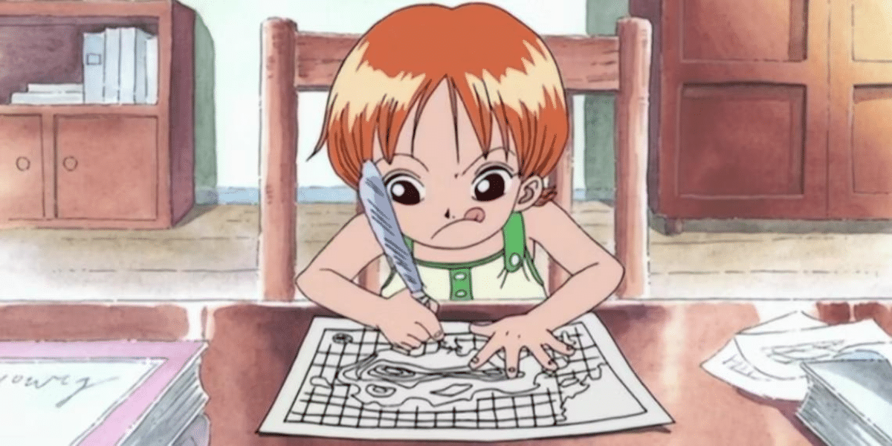
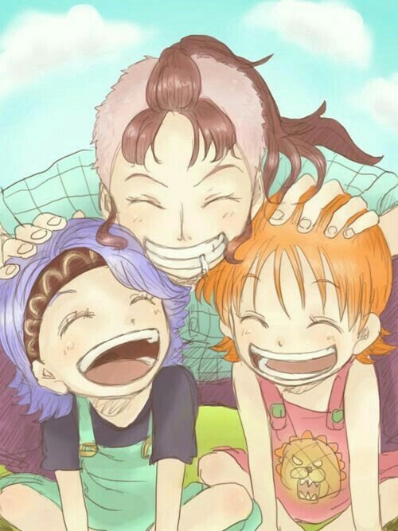
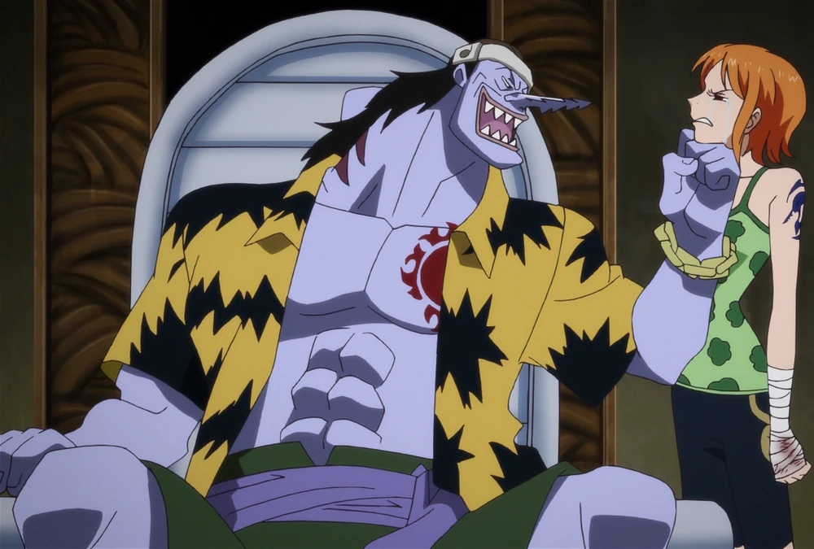
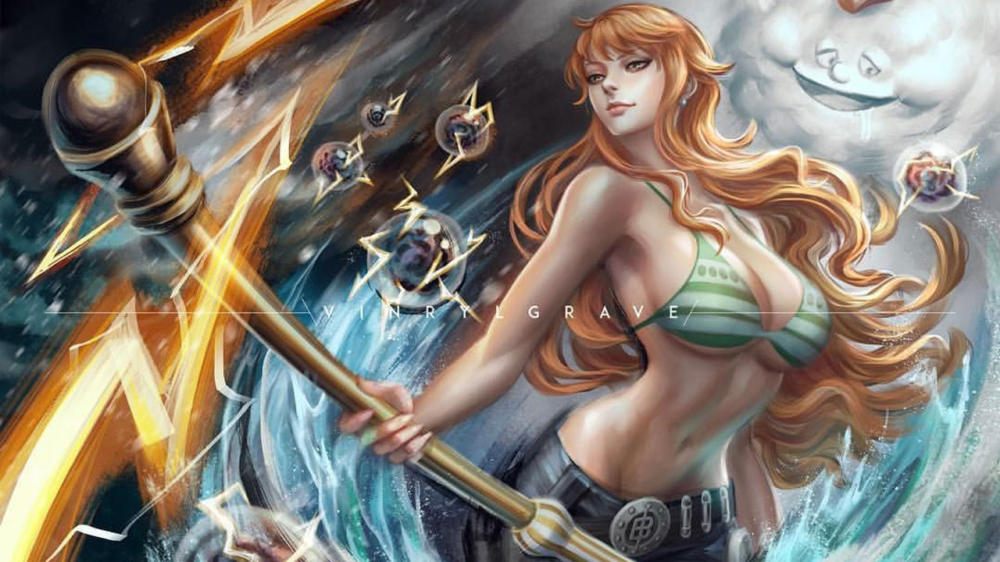

Nami é a navegadora dos Piratas do Chapéu de Palha, responsável por guiar a tripulação através dos mares turbulentos em busca do tesouro lendário, o One Piece. Ela é uma personagem inteligente, estratégica e com um profundo conhecimento de cartografia e meteorologia.
Nami representa a importância da inteligência e da estratégia em uma equipe. Sua determinação em superar um passado doloroso e alcançar seus sonhos inspira muitos fãs a valorizar a resiliência e a capacidade de liderança. Além disso, sua habilidade em navegar e prever o clima destaca a importância do conhecimento especializado em qualquer jornada.
Nami nasceu na Vila Cocanha, uma ilha dominada pelos Arlong Pirates. Sua infância foi marcada pela perda e pelo sofrimento, o que a motivou a sonhar com a liberdade e a segurança. Inicialmente, Nami era uma ladra que trabalhava para Arlong, mas ao se juntar à tripulação de Luffy, ela encontra um novo propósito e uma família que a apoia. Nami é conhecida por sua inteligência, astúcia e habilidades em negociação, além de sua paixão por desenhar mapas.
  Como navegadora, Nami possui um vasto conhecimento sobre navegação e previsão do tempo, habilidades essenciais para a tripulação atravessar os perigosos mares de One Piece. Ela utiliza um bastão chamado Clima-Tact, que pode manipular o clima para criar ataques poderosos e defender a tripulação. Ao longo da série, Nami aprimora suas habilidades, tornando-se uma combatente mais eficaz e desenvolvendo técnicas mais avançadas com seu Clima-Tact.
